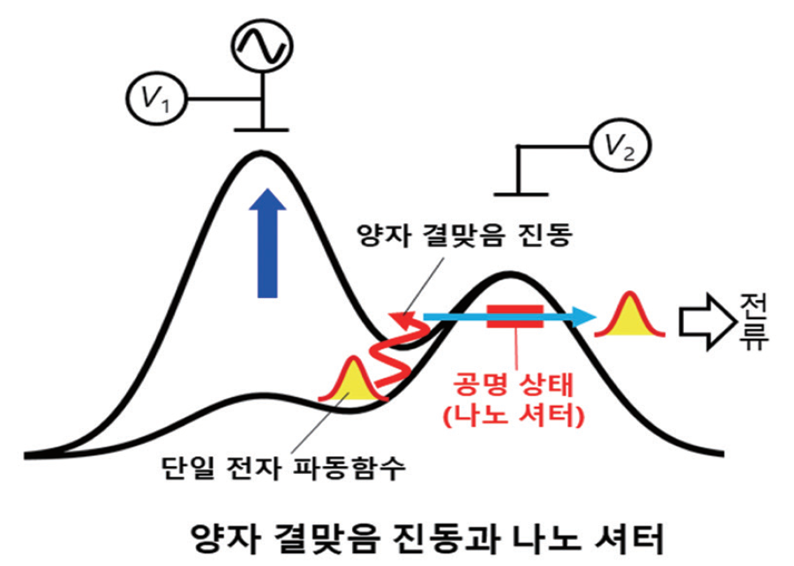
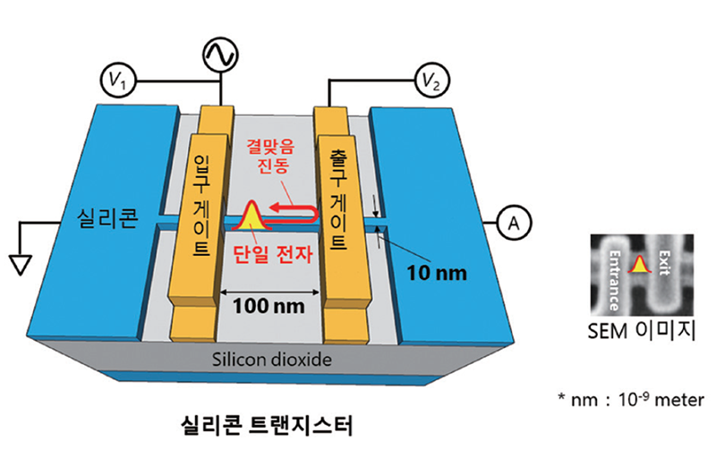

연구성과 10선
연구성과 10선
KAIST RESEARCH ACHIEVEMENTS
전자 파동함수의 피코초
진동 관측법 개발
물리학과 심흥선
요약
나노 소자의 양자역학적 특성을 이용하여, 새로운 개념의 전기소자를 구현하는 것이 학계의 중요 방향이다. 최근 나노 전기소자 내에서 전자 파동함수의 피코초(1조분의 1초) 수준의 초고속 움직임을 관찰하는 방법을 카이스트 심흥선 교수 연구팀이 제안했다 [논문1]. 심흥선 교수 연구팀은 양자역학적 공명 상태(resonant state)에 기반한 나노 셔터를 제안하였는데, 이를 이용하면 기존의 전기 신호 분해능 (10-100 피코초)을 1000배 이상 향상 시킬 수 있다. 이를 이용하여, 양자점 전자펌프 내에서 전자의 양자역학적 파동함수가 초고속 (서브 테라헤르쯔) 공간 진동하는 것을 최초로 관측하는데 성공하였다.
연구배경
나노 소자의 양자역학적 특성을 이용하여, 새로운 개념의 전기소자를 구현하는 것이 학계의 중요 방향이다. 새로운 전기소자를 기반으로, 양자역학적 근본원리를 발견하거나 풀리지 않은 채 남아있는 학문적 난제를 해결한다. 또한, 나노 전기소자 nano-electronics) 기술을 발전시켜서, 정보를 양자역학적으로 처리하는 양자정보 소자(quantum information device) 구현에 도달할 수 있다. 이를 위해서는 나노 전기소자 내에서 빠르게 움직이는 전자(electron)를 제어하고 측정할 수 있어야 한다. 움직이는 물체를 관찰하기 위해서는 카메라를 이용하여 연속적으로 촬영하면 된다. 이 방법은 셔터의 작동 속도 (시간 분해능)보다 더 빠른 물체의 움직임은 포착할 수 없다는 한계가 있다. 이러한 문제점은 나노 전기소자에도 나타난다. 전자가 나노 전기소자를 횡단하는데 수 피코초 (10-12초)가 소요 된다.
현재 가장 좋은 측정기기의 전기 신호 시간 분해능이 100-1000 피코초 (10-8 - 10-9초)이어서, 나노 전기소자 내부의 전자들의 움직임을 관측하는 것은 불가능하다고 여겨져 왔다. 전자의 초고속 양자역학적 움직임을 기반으로 하는 양자정보 소자 구현을 위해서는 이러한 문제점이 해결되어야 한다.
연구내용
KAIST 심흥선 교수 연구팀은 나노 셔터를 나노 전기소자 옆에 부착하여 이 문제점을 해 결할 수 있다 는 이론을 제시했다(그림 참조) [논문1]. 나노 셔터는 공명 상태(resonance state)를 갖는 불순물로, 나노 전기소자 내의 전자가 불순물 근처에 도달할 때 전자는 공명 상태를 통해 소자 바깥으로 나오게 돼 전류 신호로 관측된다. 전자 에너지와 공명 상태 에너지가 같을 때만 바깥으로 나올 수 있으므로 공명 상태 에너지를 시간에 따라 변화시켜 나노 셔터를 빠르게 열거나 닫을 수 있다. 나노 셔터를 여는 시간을 바꾸면서 전류를 측정하면 전자가 불순물 근처에 도달한 시점 정보를 얻게 돼 나노 전기소자 내의 전자 움직임을 포착할 수 있다. 심흥선 교수 연구팀의 해결책에 따라 일본 NTT 연구소는 영국 NPL 연구소와 협력해 나노 셔터를 구현했다. 실험 연구팀이 이용한 나노 전기소자는 양자점 전자 펌프(quantum-dot single-electron pump)로, 이 소자는 단일 전자를 정해진 주기로 발사하는 역할을 하며 전류의 표준을 연구할 때 사용된다. 양자점 전자 펌프의 출구에 나노 셔터를 구현해 양자점 전자 펌프 내에서 전자 파동함수가 공간적으로 진동하고 있음을 관찰했다 (참고로, 이러한 전자 파동함수 공간 진동의 존재는 심흥선 교수 연구팀이 이전 연구에서 예측하였다[논문2]). 진동수는 무려 250기가헤르츠로 시간으로 환산하면 수 피코초 수준의 진동이다. 10GHz 이상의 진동수의 전자 움직임을 포착한 것은 이번 연구가 처음이다.
 그림 1. 나노 전기소자 내에서 초고속으로 움직이는 전자를 측정하는 방법. 전자가 공명 상태를 통해 바깥으로 나오는 특성을 응용하여, 공명 상태를 나노 셔터로 활용한다. 공명 상태 에너지를 시간에 따라 변화시켜서 셔터를 열거나 닫는다. 공명 상태를 통해 나오는 전류를 측정하여, 나노 전기소자 내의 전자 파동함수의 양자 결맞음 공간 진동을 포착할 수 있다.
 그림 2. 실리콘 기반 양자점 전자 펌프. 양자점 펌프는 실리콘 나노 도선, 입구 게이트, 출구 게이트로 구성된다. 펌프 내에서 전자가 양자 결맞음 공간 진동을 보이기 되는데, 이를 관측하기 위해, 나노 셔터(불순물 공명 상태)를 출구 게이트 아래에 구현하였다.
기대효과
본 연구는 양자역학 상태를 제어해 기존 기술의 한계를 돌파 할 수 있음을 보여주었다. 개발된 나노 셔터는 전자의 양자역학 근본원리를 탐구하는 데에 활용될 뿐 아니라 전류 표준, 초정밀 전자기장 센서, 초고속 큐빗 제어 등 차세대 양자정보 소자에 응용될 수 있다.
연구성과
[논문 1] Gento Yamahata, S. Ryu, N. Johnson, H.-S. Sim, A. Fujiwara and M. Kataoka, “Picosecond coherent electron motion in a silicon single-electron source”, Nature Nanotechnology 14, 1019 (2019).
[논문 2] S. Ryu, M. Kataoka, and H.-S. Sim, “Ultrafast Emission and Detection of a Single-Electron Gaussian Wave Packet: A Theoretical Study”, Physical Review Letters 117, 146802 (2016).
[논문 1]이 저널에서 우수 연구로 선정되어 소개됨. Nature Nanotechnology, News & Views: G. Feve, “Picosecond detection of electron motion”, Nature Nanotechnology 14, 1005 (2019).
연구비지원
한국연구재단, 선도연구센터지원사업